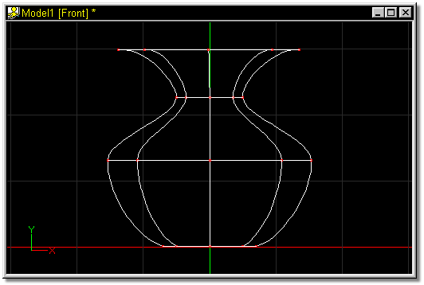
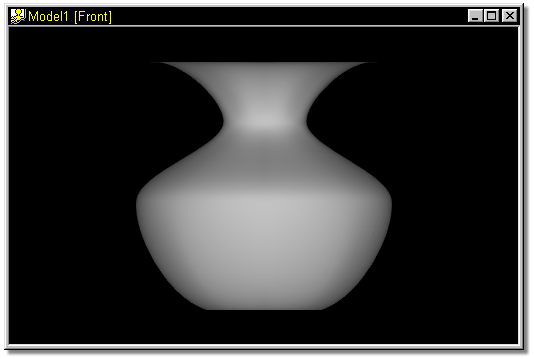
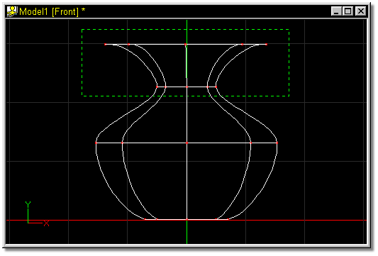
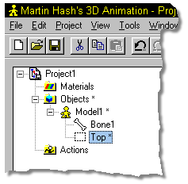
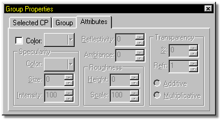
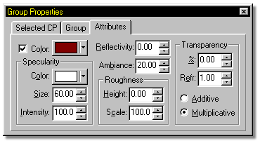
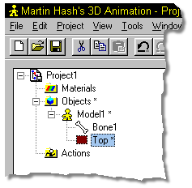
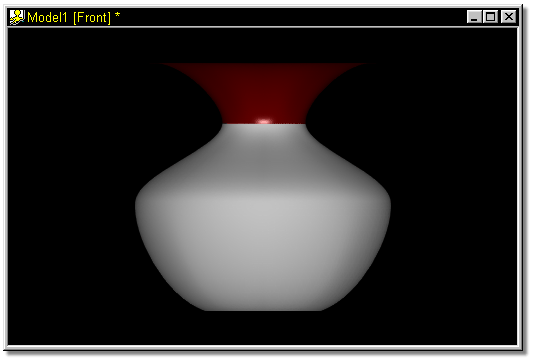

Models are made up of patches, and each patch or group of patches can be
assigned a different color or material. Patch coloring allows you to select patches
individually or in groups and apply an Attribute type material to them.
Attribute materials consist of color, specular color, size and intensity,
reflectivity, ambiance, roughness height and scale, transparency, refraction, and
transparency type.
Models are made up of patches, and each patch or group of patches can be
assigned a different color or material. Patch coloring allows you to select patches
individually or in groups and apply an Attribute type material to them.
Attribute materials consist of color, specular color, size and intensity,
reflectivity, ambiance, roughness height and scale, transparency, refraction, and
transparency type.
To use patch materials, group names must be used.

The simple lathed vase shown in figure 1 will be used to demonstrate patch coloring.

Figure 1
When rendered, the vase looks similar to figure 2.

Figure 2
The first step in using patch colors is to group the patch or group of patches that you want to color. In this case, the top of the vase was selected.

Figure 3
Once the group is selected, click twice on the group name in the Project Workspace (it will default to “Untitled”), then type in a name for the group. You must rename the group to apply patch materials.

Figure 4
Click the Attributes tab on the Properties Panel:

Figure 5
To apply a patch color, check the Color box. The options on the panel will become unghosted, allowing entry into the available fields.

Figure 6
Notice that the box next to the group name in the Project Workspace changes to reflect the color you select.

Figure 7
When rendered, the vase now looks similar to figure 8:

Figure 8
Jump to Material
Jump to Decal